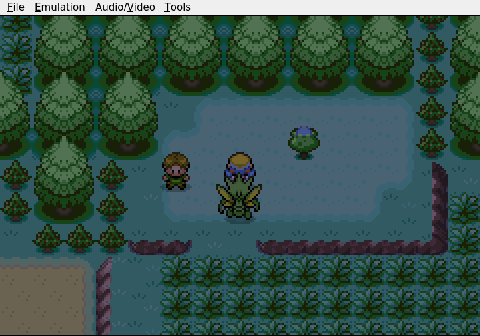
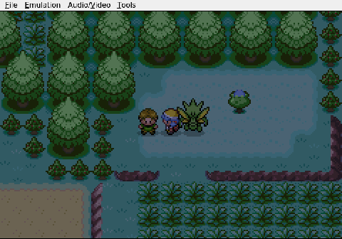
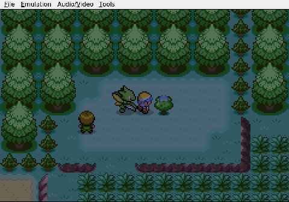
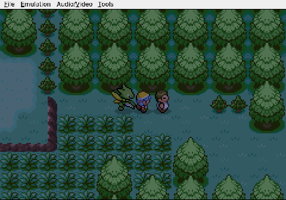

Gemini plays Pokemon Heart & Soul, Run 2
A Scarf for a Scyther
Gemini scores a massive early-game item for its lead Pokémon.
Route 29 is mostly uneventful. Gemini picks a berry from a tree, pockets a restorative item, and keeps walking.

Then it wanders off the main path and finds Tuscany, one of the Weekday Siblings. The dialogue prompt asks what day it is. Gemini selects "Tuesday," which happens to be correct, and Tuscany hands over a Silk Scarf.

What matters is what happens next. Gemini recognizes exactly what it is holding. In its journal it notes that the Scarf will power up Viper's Quick Attack, and within seconds the item is equipped.

For anyone unfamiliar: a Silk Scarf boosts Normal-type moves. Quick Attack is a priority move, meaning it strikes first almost every time. Viper is a Scyther. A Scyther with a boosted priority attack this early in a Nuzlocke is a safety net stitched out of raw damage. Fragile wild encounters that might normally chip away at the team now drop before they can touch her.

It is a small, quiet play. No one nearly dies, nothing explodes. Gemini just reads the situation, does the menu work, and walks away with an edge it will carry for a long time.